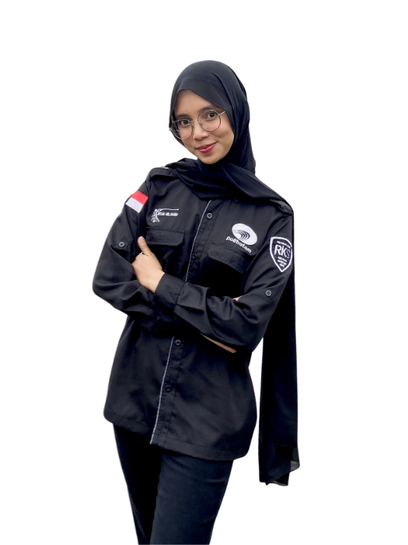

MY PORTOFOLIO
Intan Sri Diana
About
ME
About
ME
About
ME
About
ME

Saya Intan Sri Diana adalah mahasiswa Rekayasa Keamanan Siber yang memiliki ketertarikan pada dunia teknologi dan keamanan digital. Saya senang mempelajari hal-hal baru, terutama yang berkaitan dengan jaringan, sistem komputer, pemrograman, dan keamanan siber.
Education & Experience
- 2022 - 2025 | SMKN 1 Sabang - Multimedia
- 2025 - 2029 | Politeknik Negeri Batam - Diploma (IV) Rekayasa Keamanan Siber
Mempelajari berbagai dasar Keamanan Siber, Jaringan Komputer, Sistem Operasi, Kriptografi, dan Pemrograman. Saat ini saya sedang memperdalam pengetahuan di bidang Internetworking, Network Defense Essentials, Security Operations Center (SOC), Web Fundamental, serta DevOps.
Skill
TEAMWORK
CRITICAL THINKING
KRIPTOGRAFI TERAPAN
LINUX
DESIGN GRAFIS
JARINGAN KOMPUTER